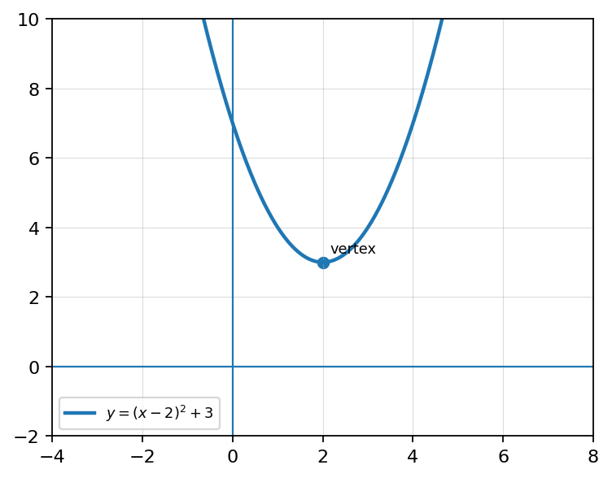
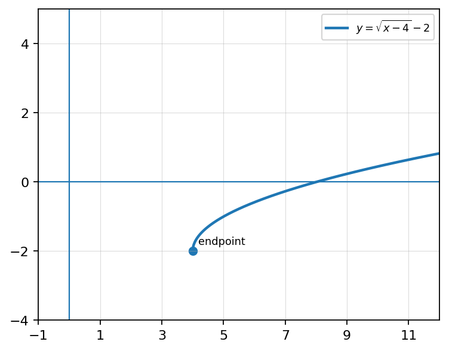
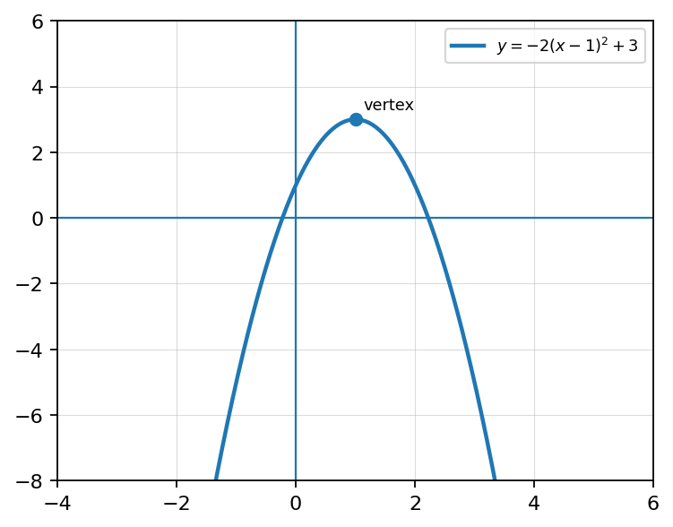

Identify the domain of each function.
Graph \(g(x)=2\sqrt[3]{x+1}-3\). State the locator point and describe all transformations.
Analyze \(f(x)=\sqrt{x+4}-6\). State domain, range, locator point, \(x\)-intercept, \(y\)-intercept, and interval of increase/decrease.
Create a square root function with domain \([-3,\infty)\), range \([4,\infty)\), and increasing behavior. Graph it and explain how your equation matches the conditions.
Write the transformation form for “shift \(f(x)\) left 5 units and down 2 units.”
Write the transformation form for “reflect \(f(x)\) over the \(x\)-axis and shift up 6 units.”
Identify the value of \(a\), \(h\), and \(k\) in \(g(x)=-3f(x+2)-5\).
Identify the value of \(a\), \(h\), and \(k\) in \(g(x)=\frac{1}{2}f(x-4)+1\).
Describe the transformations of \(g(x)=4\sqrt{x+5}-1\) from the parent function.
Describe the transformations of \(g(x)=2(x+3)^2-4\) from the parent function.
Two students describe \(g(x)=3f(x+2)-4\). Student A says the graph shifts left 2, stretches vertically by 3, and shifts down 4. Student B says the graph shifts right 2, stretches vertically by 3, and shifts down 4. Who is correct? Justify your answer.
Create two different transformed functions using the same parent function \(f(x)\) that both have a vertical shift up 2 but different stretches or reflections. Explain how their graphs would differ.
Let \(f(x)=x^2-3x+2\). Find and simplify the difference quotient.
Let \(f(x)=\sqrt{x}\). Set up the difference quotient and rationalize the numerator.
A student simplifies \(\frac{(x+h)^2-x^2}{h}\) to \(h\).
Create a quadratic function whose average rate of change from \(x=1\) to \(x=3\) is 8.
For \(g(x)=f(x)+4\), describe the transformation from \(f(x)\) to \(g(x)\).
Use the graph to identify the horizontal and vertical shifts from the parent function.

Write an equation for the graph of \(y=x^2\) shifted right 4 units and up 1 unit.
Write an equation for the graphed square root transformation.

Describe the transformations of \(g(x)=4\sqrt{x+5}-1\) from the parent function.
A student says \(g(x)=f(x-5)\) shifts the graph left 5 units because of the minus sign. Explain the error and give the correct transformation.
Use the graph to write an equation and justify each transformation using \(a\), \(h\), and \(k\).

Create an equation of the form \(g(x)=a|x-h|+k\) whose graph has vertex \((3,-2)\), opens downward, and is narrower than the parent function. Justify your equation.